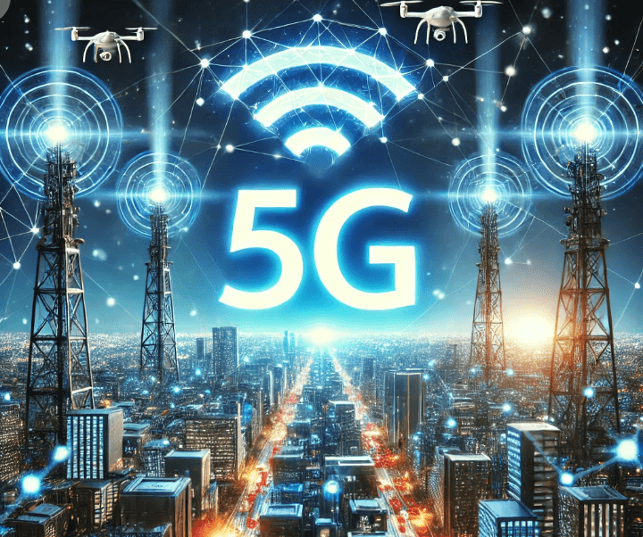

L'impact de la 5G sur les technologies de demain

L'impact de la 5G sur les technologies de demain
La 5G, cinquième génération de réseau mobile, n'est pas seulement une évolution de la 4G. Elle constitue une révolution qui transforme notre manière de vivre, de travailler et d'interagir avec la technologie.
---
1. Une vitesse de connexion sans précédent
La 5G offre des vitesses de téléchargement et de navigation jusqu'à 100 fois plus rapides que la 4G.
Impact :
Streaming en ultra-haute définition, jeux vidéo en cloud sans latence, et téléchargements quasi instantanés.---
2. Réduction de la latence
La latence ultra-faible de la 5G (inférieure à 1 milliseconde) ouvre la porte à des applications en temps réel.
Exemples :
Chirurgie assistée par robot, voitures autonomes, et interactions VR/AR immersives.---
3. Connectivité massive pour l'Internet des Objets (IoT)
La 5G peut connecter des milliards d'appareils simultanément, permettant une expansion rapide de l'IoT.
Exemples :
Villes intelligentes, capteurs industriels, et maisons connectées.---
4. Transformation des industries
La 5G révolutionne des secteurs entiers :
Exemples :
Fabrication avec l'automatisation, agriculture de précision, et commerce via la réalité augmentée.---
5. Défis et enjeux
Bien que prometteuse, la 5G pose des défis :
Défis :
Infrastructure coûteuse, inquiétudes concernant la santé, et cybersécurité accrue.---
Conclusion
La 5G est une révolution technologique majeure. En débloquant un potentiel énorme pour l'innovation, elle prépare le terrain pour un avenir plus connecté et automatisé.